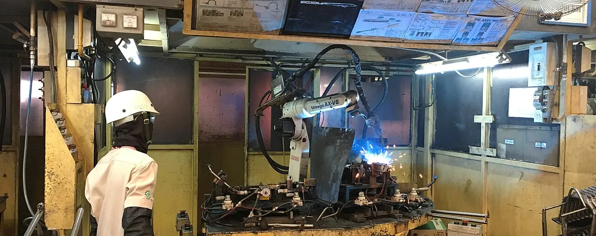

Press line
1,500t
| Hydraulic deep drawing | Large panels in a single stroke |
|---|---|
| Compact presses | 150 t, for small parts |
| Forming stages | 1 to 4, by part |

Shearing, forming, welding, finishing and inspection run in sequence on one site. Nothing leaves mid-process, which keeps delivery dates.
Nothing leaves the site mid-process, which keeps delivery dates. 10 certifications held.
1,500t
| Hydraulic deep drawing | Large panels in a single stroke |
|---|---|
| Compact presses | 150 t, for small parts |
| Forming stages | 1 to 4, by part |
11robots
| CO₂ welding robots | Throughput and even quality |
|---|---|
| Manual welding | Joints robots cannot reach |
| Finishing | Weld beads and defects ground away |
The process is built around the part.
Hydraulic deep-drawing presses form large panels in a single stroke; compact presses take the small parts.
Robotic welding gives throughput and even quality; skilled welders cover the joints robots cannot reach.
Shearing through inspection run on the same site, so no part leaves mid-process.
How cold-rolled steel becomes a finished part.
Cold-rolled steel is received, checked for grade and thickness, and registered.
Sheets are cut to working size, nested to keep offcuts low.
Shapes are pressed; depending on the part, forming is split across up to four stages.
Robotic welding does the bulk; skilled welders finish the joints the robots cannot reach.
Weld beads and defects are ground away. Paint quality is decided here.
Dimensions and appearance are checked. Only passed parts move on.
Handled by partner painting shops. Colour and film follow customer specification.
Packed to quantity and dispatched with a delivery statement.
Hanil plantPartner